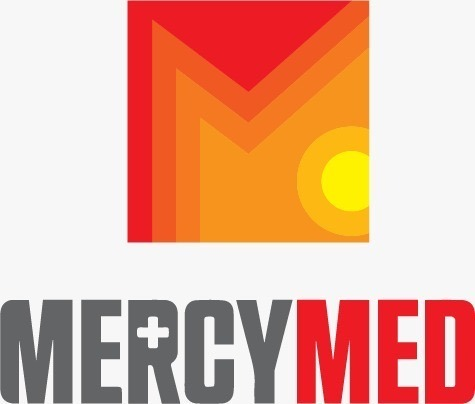
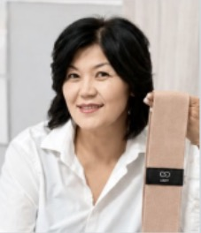
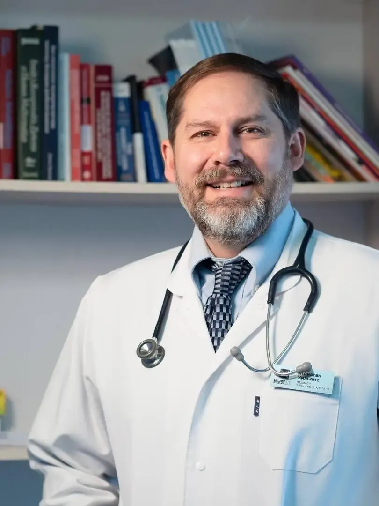
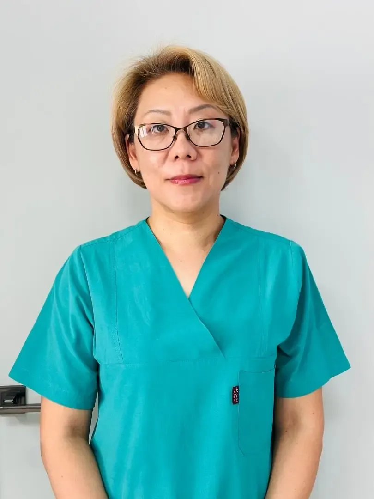
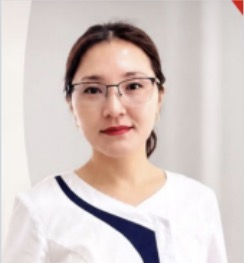
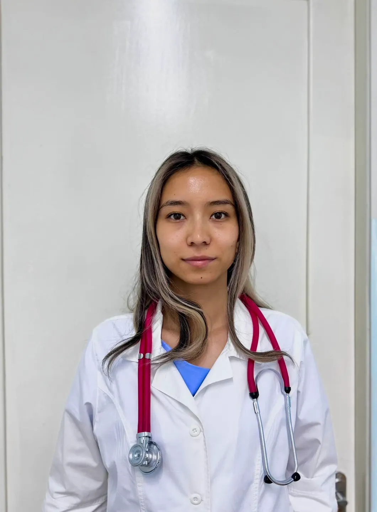
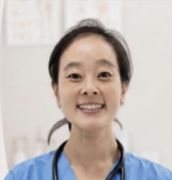
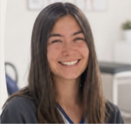
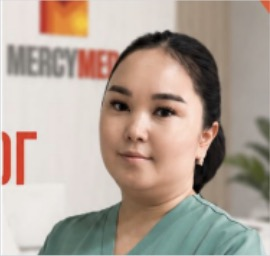

Evidence-based medicine
Clear recommendations grounded in modern medical knowledge.
What does this mean?
Medical decisions are guided by current research and international medical knowledge, rather than by tradition alone.
Private medical centre · Bishkek
Modern medical knowledge, international experience and a human approach — all in one place.
Clear recommendations grounded in modern medical knowledge.
Medical decisions are guided by current research and international medical knowledge, rather than by tradition alone.
Adult and pediatric care with specialists who coordinate.
Charitable mobile clinics are at the heart of MercyMed.
01 / About MercyMed
MercyMed is a private outpatient medical centre in Bishkek, providing high-quality care based on modern medical knowledge and international experience.
Our story began with mobile clinics serving communities in different regions for over 10 years. The Bishkek clinic opened in October 2023.

Mobile clinics · the heart of MercyMedCharitable clinics have brought medical support to communities across different regions.
An outpatient centre for families, local residents and international visitors.
02 / What we do
From daily consultations to preventive check-ups, our team helps you understand what comes next.
Adult and pediatric consultations in one centre.
Choose a specialist to preselect them in your appointment request:
Growth and development, vision screening, EKG, anemia and diabetes screening, and laboratory tests.
For growth and development checks, start with a pediatric consultation; for adult check-ups, choose family medicine or internal medicine. The team will advise which tests are right for you.
Ultrasound, EKG, vision testing, audiometry and birth preparation courses by a certified doula.
Ultrasound: Nargiza Islamova · birth preparation: Mahabat Alieva, doula · physical therapy: Madison Smith
Additional services are not booked directly. First request a doctor consultation; the doctor will advise you and help arrange the appropriate service.
Consultations and medical reports are available in Kyrgyz, Russian, English, Chinese, German and French.
03 / The people behind the care
Experienced specialists and a shared belief that good medicine starts with listening.

Nurse / Director / Doula
Kyrgyz nurse, clinic director and doula. Helped start MercyMed’s mobile-clinic work with Jonathan over 10 years ago.
Chief Doctor / Pediatrics
Care for children and their families.Request appointment
Pediatrics / Family Medicine
Whole-family care across every stage.Request appointment
Internal Medicine / Pulmonology
Thoughtful care for lasting health.Request appointment
Pediatric / Intensivist
Calm, attentive pediatric expertise.Request appointment
Pediatrics
Helping young patients feel at ease.Request appointmentPediatrics / Oncology
International experience, close to home.Request appointment
Physical Therapist
Supporting movement and recovery.
Gynecology
Respectful care for women's health.Request appointmentUltrasound
Clear imaging for confident next steps.The client materials do not specify years of experience for most clinicians or name the receptionist. Contact MercyMed to confirm current experience and language availability.
The clinic materials list Kyrgyz, Russian and English; Nancy Yau speaks Chinese, and Lukas Meyer-Landholt speaks German and French.
Request an appointment04 / For organisations
MercyMed works with schools, companies, embassies and medical education partners.
Talk to our teamYearly medical check-ups designed for your organisation.
Special deals for students and partner communities.
Training for doctors and medical students.
05 / Your next step
Send us a request and our team can help you choose a consultation.
06 / Contact
MercyMed medical centre
Tunguch microdistrict, near Ayu Grand
Approximate location